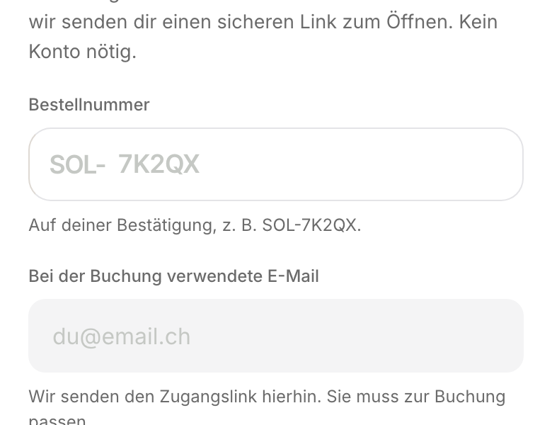

Both are live contradictions, not new ideas. Click into the fields; they behave exactly as the real ones would. Answer in one line, for example "fill gray, focus edge".
Right now your booking lookup form renders BOTH, on the same screen. The order-number field is white with a hairline and a 16px radius; the email field right below it is filled gray with an invisible border and a 12px radius. Nobody chose that: a rule in the stylesheet targets inputs by their type, so a field with type="email" gets the gray fill while a field without a type keeps what its component asked for. Pick one and every form on the site matches.
Your design contract says an input gets one ink edge plus a single soft glow. Your own no-focus-ring rule refuses every glow, anywhere. Both cannot be true, and until today neither was: the focus law sat in a place where the styling never applied, so inputs had no focus mark at all. Click both fields and pick the one that is right.
The white field on top, the gray field below it. Same screen.
